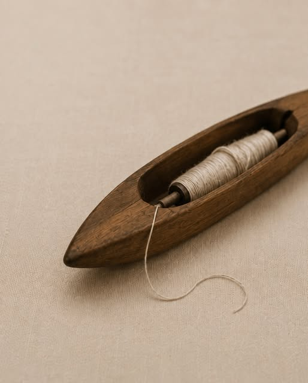
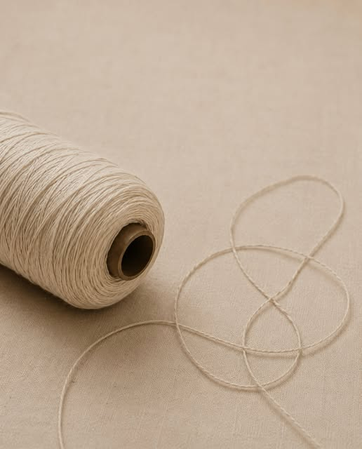

About Shajra
Rooted in craft
Made in Pakistan with a deep appreciation for nature and craft, our textiles bring together considered design and the beauty of handmade details.
About Shajra
Shajra by Maria is a design-led home textile brand inspired by nature and traditional craftsmanship. Working with natural fibres and thoughtful techniques, we create timeless pieces that bring warmth, texture, and meaning to everyday spaces.


The hands behind every piece
Fibre to form
The hands behind every piece